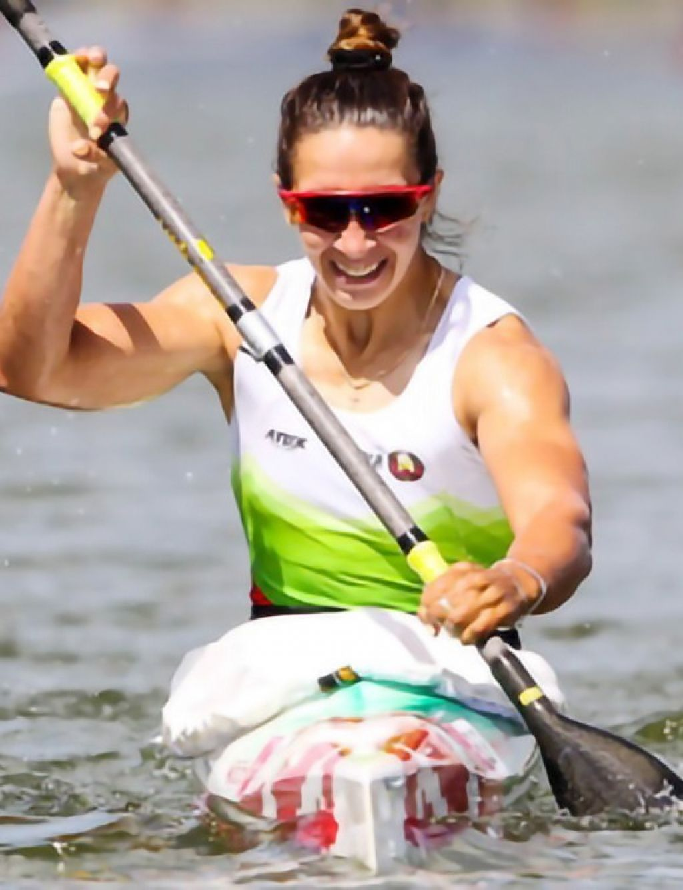

Празднование дня победы.
Добро пожаловать в Хойники!
Онлайн-экскурсия по району!
Значимые личности района
В Хойникском районе родились и жили много известных людей, которые внесли вклад в различные сферы развития.
Иван Мележ
Родился в Глинище, хорошо учился, был участников ВОВ, писатель.
Ольга Худенко
Родилась в Хойниках, началась заниматься греблей на байдарках с 14 лет, спортсменка.
Николай Метлицкий
Родился в Хойниках, много писал про свой родной край, Лауреат Специальной премии Президента РБ, писатель.
Историческое наследие
Историческое наследие – это достояние материального и духовного характера, которое было создано в прошлом, и носящее определенную ценность для сбережения культурной и исторической идентичности. Вещественные носители историко-культурного наследия состоят из ряда объектов, формирующих исторически сложившийся в регионе ландшафт.
Духовное наследие
Духовное наследие - заимствованные из прошлого духовные ценности, идеи, образцы, опыт, навыки, знания, т.е. любые результаты и способы творческой деятельности людей. Содержание духовных ценностей, их пересмотр и переоценка, способы их соотнесения, формы хранения и трансляции, вкусы, характер эстетического восприятия действительности находятся в непрерывном движении и изменении.
Новости
Окт 17, 18:30.
Уборка кукурузыСобрано 65%, в цифрах это 5975 га, Намолочено более 3487 тонн кукурузы на зерно
Окт 17, 11:20.
Сделаем лес чищеХойникский лесхоз приглашает добровольцев для наведения порядка в лесах